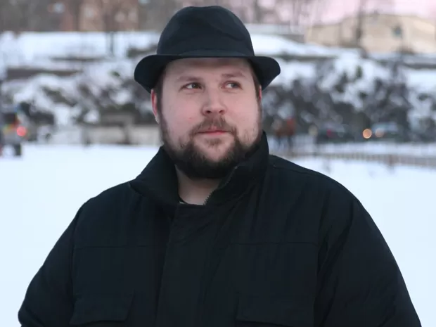
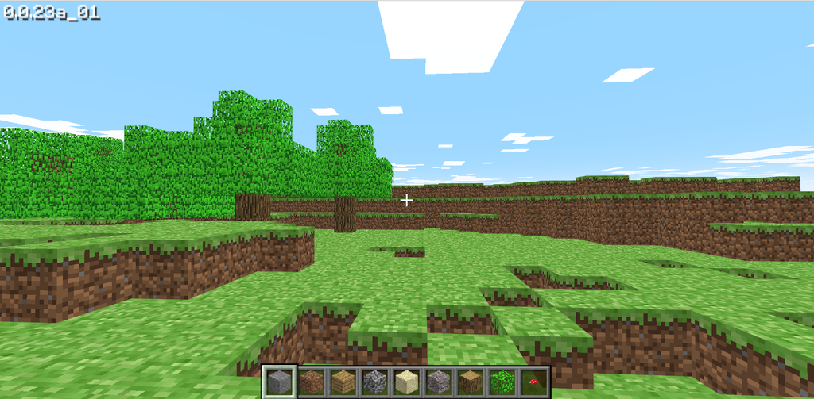

Quem criou o Minecraft? Conheça a história do game!
Como tudo começou
Como já dito, o jogo foi lançado em 2009. O criador de Minecraft é o programador e designer sueco Markus "Notch" Persson, que levou apenas seis dias para criar tudo do zero. O projeto começou em 10 de maio, e no dia 16, ele já disponibilizou o projeto em fóruns.
A ideia do jogo não é toda original e tem suas guias para as mecânicas e outros conceitos. A principal delas é Infiniminer, um jogo de mineração que Notch adorava. À primeira vista, o game lembra muito o popular jogo de blocos.
Além desse game, outras inspirações para o game designer foram Dwarf Fortress, Dungeon Keeper e RollerCoaster Tycoon. Os simuladores e suas funções de gerenciamento foram misturadas com elementos de RPG e deram um caminho para Notch criar a base de tudo que conhecemos hoje.
Batismo turbulento
Antes de ganhar o nome de Minecraft, algo que pode ser traduzido como “minerar e construir”, o primeiro nome do jogo era bem direto ao ponto: “Cave Game”. Com um nome de “Jogo de Caverna”, era fácil imaginar sobre o que se tratava o título.
Porém, o nome sofreu uma nova alteração e passou a se chamar “Minecraft: Order of the Stone” (A Ordem da Pedra), algo com um ar muito medieval. Felizmente, o nome foi encurtado e ficamos com o conciso Minecraft.
Os anos seguintes
Depois de todas essas “mudanças criativas” e uma série de ajustes e melhorias, em 2011 o game saiu da limitação dos fóruns e foi lançado para todos, começando sua crescente popularidade com criadores de conteúdo e fãs em todo mundo.
Em 2014, Notch publicou em seu perfil pessoal do Twitter que queria vender sua parte na Mojang e seu grande Minecraft. Assim, a Microsoft aproveitou a oportunidade e comprou a empresa por US$ 2,5 bilhões.
Polêmicas
Mesmo com uma obra memorável, Notch sempre se envolveu em diversas polêmicas na internet. Os casos mais marcantes foram entre 2016 e 2017, quando ele usou muito o Twitter para atacar mulheres e pessoas LGBTQIA+.
As publicações sempre envolviam banalizações às manifestações por direitos, xingamentos de baixo calão e outras ofensas sexistas, transfóbicas e racistas. Além disso, o programador também compartilhava diversas teorias da conspiração envolvendo acusações de pedofilia e tráfico infantil do Partido Democrata dos Estados Unidos.
Com tantas problemáticas, a Microsoft passou a evitar manter a associação da imagem do jogo com Markus Persson, de modo que o criador não foi convidado para a festa de 10 anos do Minecraft, em 2019, já que seu posicionamento era contra os valores de inclusão e igualdade pregados pela companhia gerenciada por Satya Nadella.
Em junho de 2021, ele chegou a falar que sua criação estava "um pouco morta".